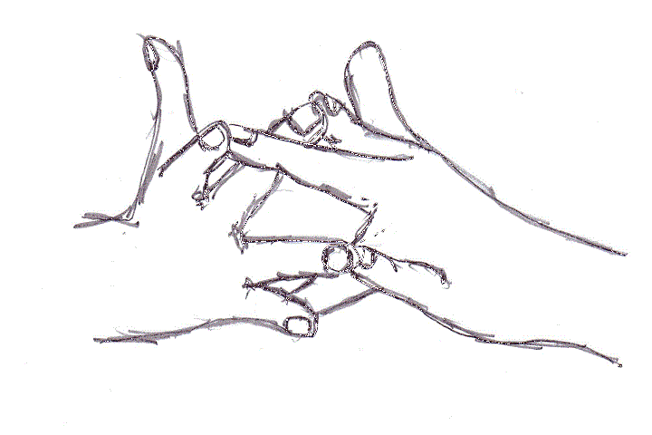

Surabhi mudra
Cow
How to
The little finger of your left hand touches the ring finger of your right hand, and vice versa. The middle fingers of both hands touch the index finger of the other. Keep thumbs extended.
Benefits
- Rheumatism and arthritis
- Osteoarthritis
- Stomach problems
Practice
Repeat 6 times and then lovingly place both hands on the sternum in this position. Focus on the feeling in this part of your body, then repeat with the hand positions reversed. Once a day is enough.

Get the Mudras appFree, no ads, works offline
Google Play
General information, not medical advice. If you have a health condition or pain, talk to a doctor or qualified teacher first.